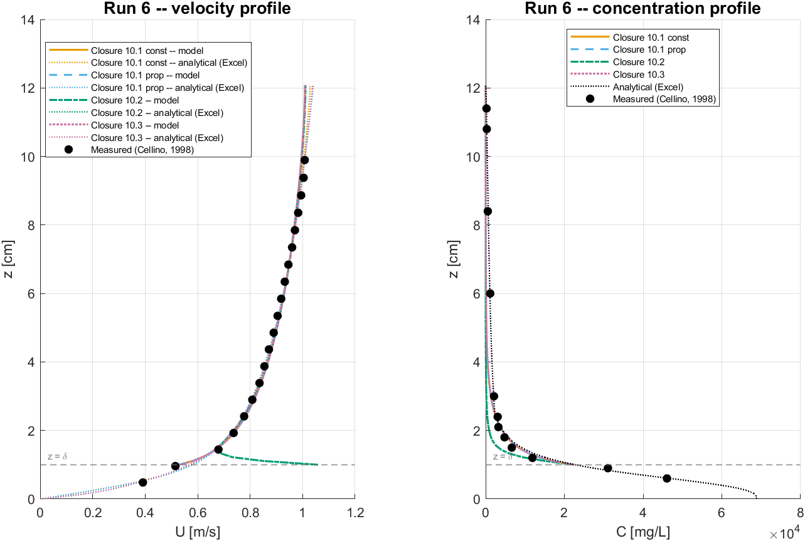
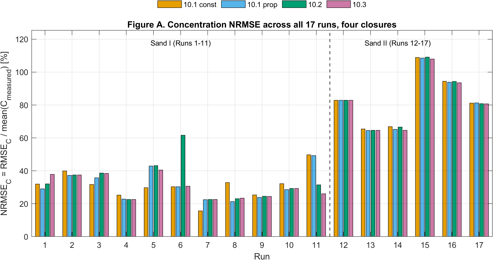

Run 6: measured and modelled velocity and concentration profiles.
Resolving Suspended Sediment Concentration Profiles in Uniform Open-channel Flow with a 1DV Model
I built and evaluated a vertical 1DV model for suspended sediment concentration in steady, uniform open-channel flow.